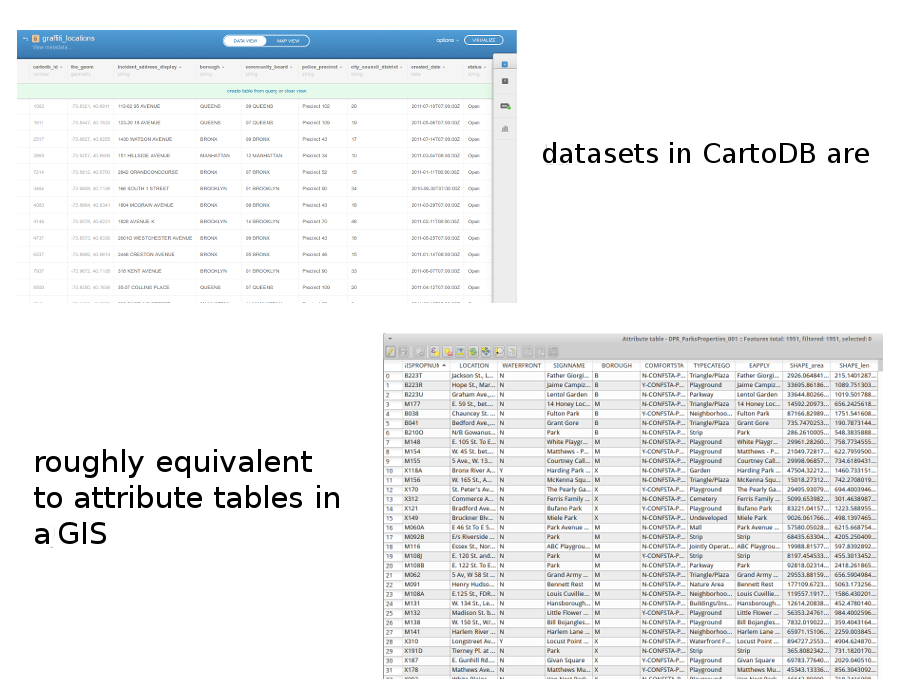

Welcome to Advanced Interactive Web Mapping, Programming, and Design, Class 1
This is a web page that can be viewed as slides.
→ to move forward
← to go back
Advanced Interactive Web Mapping, Programming, and Design
Class 1
Where we're heading
HTML
<p>
<a href="...">Link One</a>
</p>
<p>
<a href="...">Link Two</a>
</p>
<a href="...">Link Three</a>
CSS
how would you style only links in paragraphs here?
<p>
<a href="...">Link One</a>
</p>
<p>
<a href="...">Link Two</a>
</p>
<a href="...">Link Three</a>
JavaScript
events
event listeners
leaflet
CartoDB
"free as in speech"
"free as in beer"
Who uses CartoDB?
datasets
where you import, edit, and analyze your data
you can upload:
- csv
- shapefiles (zipped)
- kml
- geojson
- (and some others)

maps
where you make public map views of your tables
CartoCSS
why?
styling maps can be painful
you can share it
you can share it
(it's just text)
CartoCSS
#earthquakes {
marker-fill: #ff307a;
marker-line-color: #FFF;
marker-line-width: 0.25;
marker-line-opacity: 0.4;
marker-width: 2;
marker-allow-overlap: true;
}
property values will often be color strings, numbers, or boolean (true/false)
that's nice, but it gets more interesting
let's vary some properties by zoom level
#earthquakes {
marker-width: 3;
...
[zoom >= 10] {
marker-width: 8;
}
}
let's call these conditional statements
conditional statements are only used if some condition is met
#earthquakes {
marker-width: 3;
...
[zoom >= 10] {
marker-width: 8;
}
}
#earthquakes {
marker-width: 3;
...
[zoom >= 10] {
marker-width: 8;
}
[zoom >= 16] {
marker-width: 13;
}
}
that's not all!
you can change styles based on a feature's attributes
#earthquakes {
marker-width: 3;
...
[mag >= 6.5] {
marker-width: 8;
}
}
look familiar?
conditional statements containing text need to wrap those strings in quotation marks
#earthquakes {
marker-width: 3;
...
[place = 'Northern Mid-Atlantic Ridge'] {
marker-width: 8;
}
}
you don't have to memorize all of this
experiment with CartoDB's visualization wizards, see the code they produce
read other people's CartoCSS